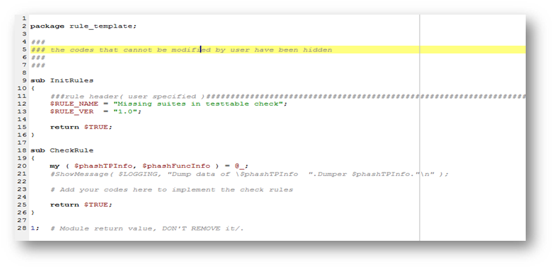

Perl module file
Perl module file is the rule definition file which defines the output and display of the check results of each custom check item.
Each check item requires a Perl module file and it must be specified as rule file in the XML file (see XML file). This Perl module file must be in the same directory as its corresponding XML file.
You can define the parameters in the Perl module file as shown in the following template:

package rule file name: The package name must be the file name of the Perl module file (without the .pm file name extension).sub InitRules: Specify the description of the module in $RULE_NAME and the version number in $RULE_VER.sub CheckRule: Add code in this section for the following information:- $phashTPInfo: The test program data from V93000, including pin configuration, level, timing, waveform, routing, vector, and so on.
- $phashFuncInfo: The setups and parameters to be displayed in the result report of the custom check item.
Functional changes
- Introduced in SmarTest 7.4.3